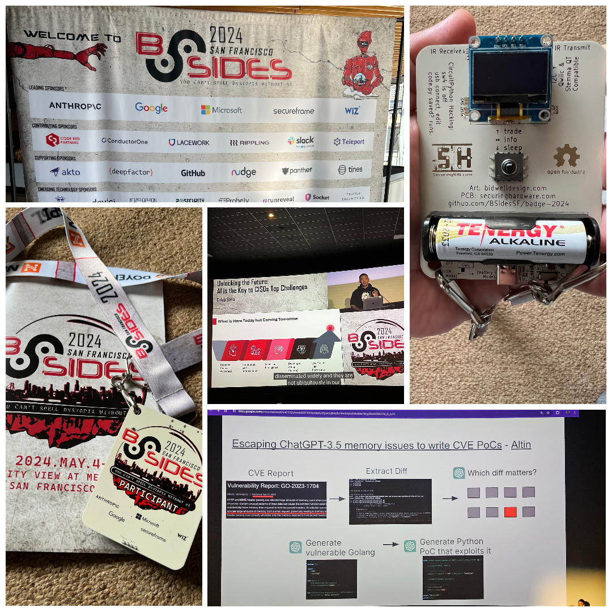

BsidesSF 2024 marked my second time attending the conference, and it was a deep dive into the world of cybersecurity. One thing that really struck me was how much talk there was about artificial intelligence (AI) and its role in security. From the moment I walked in, it was clear that AI was a big deal at this conference.
Throughout the sessions and workshops, experts shared practical insights into how AI is changing the game when it comes to detecting and responding to cyber threats. It wasn't all technical jargon either; there were real conversations about the ethical implications of using AI in security operations.
But it wasn't just about the tech stuff. There were also some deep discussions about the human side of AI in cybersecurity, like how we need to make sure AI algorithms aren't biased and how we can use AI ethically to protect people's privacy.
Overall, BsidesSF 2024 was a reminder that AI isn't just some distant future tech—it's here, it's now, and it's changing the way we do cybersecurity in a big way.
